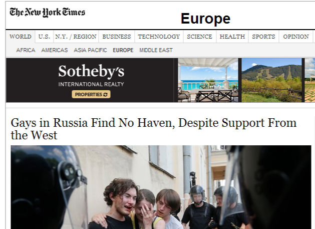
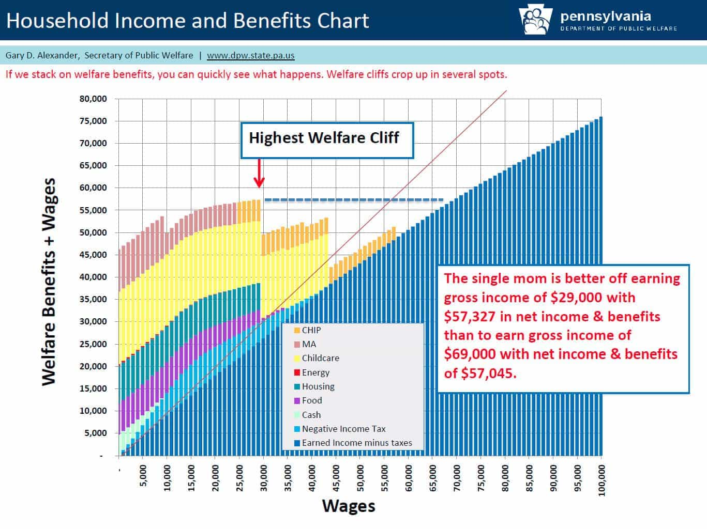

< < < Back
35 Things Wrong With America – Return Of Kings
1. Americans are unnaturally overweight, with little shame on being “plus sized.”
Don’t Miss: 6 Reasons Why Fat Women Are Defective
2. They have cookie cutter lives that they alleviate with a hopeless addiction to entertainment, technology, and celebrity gossip.

3. There are significantly more horny guys than available girls in most metropolitan areas, creating a demographic imbalance that enables low quality girls to act like supermodels.
Don’t Miss: Why Demographics Matter For The Younger Man
4. A victorious feminist movement has institutionalized man-hating in corporations, universities, government, and the media.
Don’t Miss: Hanna Rosin’s “The End Of Men” Is A Feminist Fairytale
5. Soulless suburbs, sprawls, and office parks create stress, malaise, and depression.
Don’t Miss: The Easiest Way To Overcome A Depression
6. Lack of proper cafe culture encourages social isolation and obesity. We’re left with Starbucks, where people go with their internet-enabled electronic devices to drink sugary milkshakes that no self-respecting European soul would call “coffee.”
Don’t Miss: 19 Photos That Show How Starbucks Is Destroying Coffee
7. Frightful public transportation systems that seem to have been instituted as afterthoughts.
8. The existence of Hollywood, which poisons the world’s culture by normalizing narcissism, consumerism, and bad movies.
Don’t Miss: Jennifer Lawrence Is A Terrible Role Model
9. Expectation to tip 20% just because someone served you a food or drink item with a fake smile.
Don’t Miss: 7 Things I Learned From Delivering Pizzas In College
10. Pervasive politically correct environment where dissenting thought is labeled sexist, racist, or homophobic. This is usually immediately followed by a witch hunt to end the person’s employment.
Don’t Miss: What Is A Social Justice Warrior (SJW)?
11. Treatment of smartphones as both friend and passionate lover, which replaces time spent in face-to-face interactions with real friends and lovers.
Don’t Miss: We’re Surrounded By Smartphone Zombies
12. Sailor and debasement culture where both sexes engage in excessive amounts of cursing, tattooism, head shaving, and all-around general vulgarity.
Don’t Miss: 5 Reasons Why Girls With Tattoos And Piercings Are Broken
13. Universities that serve as liberal brainwashing factories instead of palaces of wisdom, enlightenment, and masculinity.
Don’t Miss: Female University Student Carries Around Mattress She Was “Raped” On
14. Frankenfoods with dubious origins, some of which are prohibited for sale in other countries.
Don’t Miss: Monsanto Ruins American Bodies
15. Disposable culture where still-functional items are thrown away instead of being repaired or reconditioned.
Don’t Miss: Take Care Of Your Stuff
16. Competitive conversation culture where people talk about themselves instead of listening. Contemplative silences are looked upon as boring or even creepy.
Don’t Miss: The Misery Of Modern Day Conversation
17. Women who prefer entertaining clowns instead of good men who want to provide for their future families.
Don’t Miss: This Is Why Girls Go For Bad Boys
18. Rule by an oligarchy that spies on citizens who don’t even care about its government’s illegal acts because they are too busy playing Candy Crush.
19. Homosexuality openly embraced and displayed in public around children who don’t yet understand the nature of human sex.
Don’t Miss: America Is Becoming A Homosexual Nation
20. Complete ignorance of world affairs by citizens due to being comically manipulated by media propaganda. Russia bad! Saudi Arabia good!

Don’t Miss: The Mainstream Media Creates Rigged Debates That Tell Society What To Value
21. People who can no longer handle original thoughts without being offended or “triggered.”
Don’t Miss: How “Trigger Warnings” Silence Dissent And Protect Fragile Egos
22. Militarization of police whose monopoly on violence allows them to taze and kill with impunity.
Don’t Miss: 6 Ways Policemen Can Regain Credibility With The American Public
23. Having to constantly be exposed to Spanish announcements, signs, and advertisements because immigrants are too lazy to learn English.

Don’t Miss: The 7 Steps That Lead To A Complete Culture Decline
24. Welfare state that redistributes money from hard-working provider men to a growing population of single mothers who are subservient to the state instead of husbands.

Don’t Miss: The Price I Paid for Helping a Single Mom’s Child
25. Effeminate men who act like homosexuals even when they are straight. Masculinized women who act like they were raised in jail or the urban ghetto.
Don’t Miss: Career Women Are Pretending To Be Men
26. Unusable city parks that are occupied by homeless people soaked in their own urine.
Don’t Miss: 6 Reasons Why Portland Sucks For Single Men
27. Calling corporate customer service and having to converse with robots. Also: self-checkout lines.
28. Mindless adoption of technology as the end-all-be-all solution to humanity’s problems.
Don’t Miss: Is Digital Technology Destroying The Middle Class?
29. Unreasonably early last-call in most cities and Puritan-like DUI laws that primarily serve to withdraw money from citizens via the judicial extortion complex instead of preserving public safety.
30. Allowing women the right to vote, which has allowed immoral progressivism to dominate the political landscape.
Don’t Miss: Women Should Not Be Allowed To Vote
31. Unsightly premature aging of women due to false tanning, late-night pizza eating, and other unhealthy lifestyle choices.
Don’t Miss: How To Handle Women With A Ticking Biological Clock
32. Widespread societal denial of the problems men face while catering to every female problem or conflict under the sun.
Don’t Miss: Thanks To Progressivism, America Is No Country For Men
33. Death of flirting and real seduction in place of fake arrogance and cheap insults. The mating game in America is a combination of email spamming and schoolyard name calling.
Don’t Miss: American Girls Have No Game
34. Too much comfort. The avoidance of real struggle or hardship has given adults the emotional development of children.
35. White knight culture where men will immediately attack their own to defend a girl who will never ever have sex with him.
Don’t Miss: How To Be The Ultimate White Knight
Did I miss anything?
 If you like this article and are concerned about the future of the Western world, check out Roosh's book Free Speech Isn't Free. It gives an inside look to how the globalist establishment is attempting to marginalize masculine men with a leftist agenda that promotes censorship, feminism, and sterility. It also shares key knowledge and tools that you can use to defend yourself against social justice attacks. Click here to learn more about the book. Your support will help maintain our operation.
If you like this article and are concerned about the future of the Western world, check out Roosh's book Free Speech Isn't Free. It gives an inside look to how the globalist establishment is attempting to marginalize masculine men with a leftist agenda that promotes censorship, feminism, and sterility. It also shares key knowledge and tools that you can use to defend yourself against social justice attacks. Click here to learn more about the book. Your support will help maintain our operation.
Read Next: 40 Pictures That Show The Decline Of American Women